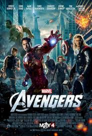

Dictator The Dictator is a 2012 political satire comedy film co-written by and starring Sacha Baron Cohen as his fourth feature film in a leading role. The film is directed by Larry Charles, who previously directed Baron Cohen's mockumentaries Borat and Brüno. Baron Cohen, in the role of Admiral General Aladeen, the dictator of the fictional Republic of Wadiya visiting the United States, stars alongside Anna Faris, Ben Kingsley, Jason Mantzoukas, and an uncredited appearance by John C. Reilly.
Avengers The Avengers premiered on April 11, 2012, at Hollywood's El Capitan Theatre and was released in the United States on May 4, 2012. The film received positive reviews from critics, as well as numerous awards and nominations including Academy Award and BAFTA nominations for achievements in visual effects. It set or tied numerous box office records, including the biggest opening weekend in the United States and Canada. The Avengers grossed over $1.5 billion worldwide and became the third-highest-grossing film of all time, as well as the highest-grossing film of 2012. It is the first Marvel production to generate $1 billion in ticket sales. 
The Impossible Maria Bennett (Naomi Watts), her husband Henry (Ewan McGregor), and their three sons Lucas (Tom Holland), Thomas (Samuel Joslin), and Simon (Oaklee Pendergast) go on a Christmas holiday in 2004 to Khao Lak, Thailand. Arriving on Christmas Eve, they settle in and begin to enjoy the brand new Orchid Beach Resort. Two days later on Boxing Day, the massive 2004 tsunami inundates the area.
Avatar Avatar, marketed as James Cameron's Avatar, is a 2009 American epic science fiction film directed, written, produced, and co-edited by James Cameron, and stars Sam Worthington, Zoe Saldana, Stephen Lang, Michelle Rodriguez, and Sigourney Weaver. The film is set in the mid-22nd century, when humans are colonizing Pandora, a lush habitable moon of a gas giant in the Alpha Centauri star system, in order to mine the mineral unobtanium,a room-temperature superconductor. The expansion of the mining colony threatens the continued existence of a local tribe of Na'vi – a humanoid species indigenous to Pandora. The film's title refers to a genetically engineered Na'vi body operated from the brain of a remotely located human that is used to interact with the natives of Pandora.